1908
Ford Model T
かつてT型フォードが自動車を一部の富裕層のものから庶民の足へと変えたように、私たちはロボットを一部の実験室から、あらゆる現場の当たり前へと変えていく。
コンビニのバックヤードで、飲料の品出しを自動化するAIロボット。AIによる自律制御と遠隔操作を組み合わせ、24時間稼働する店舗のオペレーションを人手不足の中でも支える。既存店舗の改修を必要とせず、そのままの棚・什器に導入できる設計が、全国への素早い展開を可能にしている。

物流倉庫の荷降ろし・デパレタイジングを、アームロボットと自動フォークリフト（AGF）の連携で自動化する。ロボットがパレットから荷を一つずつ仕分け、AGFがそれを運ぶ。人が担ってきた重労働の工程を、機体同士が自律的に連携しながら完結させ、倉庫全体のオペレーションを止めない。
ロボット基盤開発向けの動作データ収集向け双腕ヒューマノイド。様々な労働シーンの業務をVLAなどで自動化するための動作データ収集用機体であり、定型化しにくい人間の手作業や身体の全体運動のデータが収集可能。
かつてT型フォードが自動車を一部の富裕層のものから庶民の足へと変えたように、私たちはロボットを一部の実験室から、あらゆる現場の当たり前へと変えていく。
遠隔操作で、ロボットに人の手を宿す。Model T Operations として、現場に立った日。
店舗の現場へ。実運用のなかで、運用ノウハウとデータが積み上がりはじめる。
既存の棚・什器のまま導入できる設計へ。改修を必要としない構造が、全国への展開を可能にする。
物流倉庫へ。機体同士が自律的に連携し、人が担ってきた重労働の工程を完結させる。
Telexistence（TX）がロボットを開発し、TX Operations（TXO）が現場に実装する。TXが生んだ機体を、TXOが製造から運用・修理まで一気通貫で担い、社会インフラとして機能させる。この循環が、ロボティクスを、不可逆な現実にする。